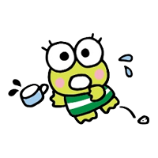
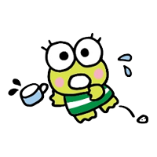
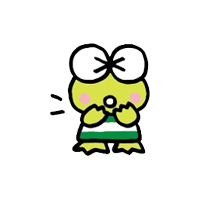
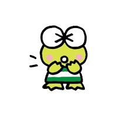

케로케로케로피 일본명 : けろけろけろっぴ 영문명 : Kerokerokeroppi • 성별 : 남자 • 모티브 : 개구리 • 애칭 : 케로피(けろっぴ) • 생일 : 7월 10일 • 가족 관계 : 아빠, 엄마, 남동생, 누나, 할아버지, 할머니 좋아하는 음식 성격 특기 취미 캐릭터 소개 좋아하는 음식 엄마가 만든 주먹밥 성격 활기찬 성격을 가진 도넛 연못 연꽃 마을의 인기인. 때때로 좌절감을 느끼지만 빨리 털어내고 다시 일어설 수 있어요! 특기 수영과 노래를 잘해요! 취미 피크닉을 가거나 모험을 떠나기 캐릭터 소개 모험심과 에너지가 넘치는 케로피는 도넛 연못에서 인기가 많아요. 케로피와 누나 피키, 남동생 고로피는 세쌍둥이 남매예요. 아빠는 의사, 엄마는 요리사예요. 케로피 가족은 도넛 연못 섬의 "케로케로 하우스" 에 살고 있어요.
주제곡 노래 제목 : 케로케로케로피(けろけろけろっぴ) 작사/작곡 : 나가사와 히로(長沢ヒロ) 편곡 : 카네사키 준이치(兼崎順一) 가수 : 세키야 마사코(関谷雅子) 1992년 8월 21일 산리오에서 발매한 CD앨범 '다 같이 노래하자! 캐릭터 송'에 수록되어 있는 곡. 해당 곡은 케로피 애니메이션 OVA의 오프닝 테마곡으로도 사용되고 있다.
하피단부이 일본명 : はぴだんぶい 영문명 : Hapidanbui 2020년 1월 31일, 포차코, 배드바츠마루, 오리 페클, 한교동, 턱시도샘과 같이 '하피단부이(はぴだんぶい)' 라는 밴드를 결성했다. • 결성일 : 2020년 1월 31일 • 멤버 : 포차코, 턱시도샘, 케로케로케로피, 배드바츠마루, 한교동, 오리 페클 개성 넘치는 6명의 남자 아이들이 '행복해지고 싶은 남자들, V자 회복을 노리자'는 의미를 담아 유닛으로 '하피단부이'를 결성. "괜찮아! 넌 너대로 잘될 거야"라는 메시지와 다양한 도전을 통해 모두를 좀 더 행복하게 만들어 줄 거야.
산리오 남자 일본명 : サンリオ男子 영문명 : Sanrio Boys / Sanrio Danshi 국내명 : 퓨로 보이즈 산리오에서 제작하는 여성향 미디어믹스 프로젝트 *'산리오 남자(サンリオ男子)' *국내에서는 '*퓨로 보이즈'라는 제목으로 KBS kids에서 더빙, 방영되었었다. *퓨로 보이즈는 스페인어로 '순수한 소년들'을 뜻한다. 선생님인 '스가미 나오키(菅見直樹)'라는 캐릭터가 케로피를 좋아하는 것으로 나온다.


 

 
